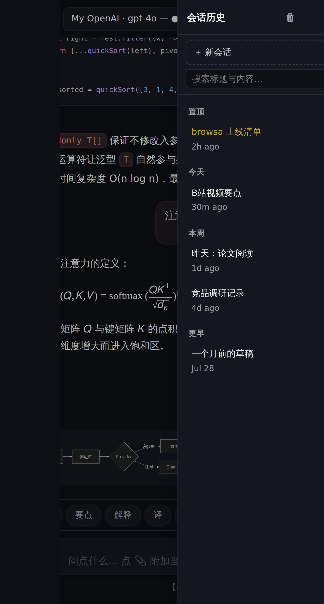

指南 / 会话与整理
会话与整理
历史就是一个不断增长的对话，别怕它变长——保存、搜索、导出、批量整理， 工具都在抽屉和快捷键里。
保存与恢复会话
顶栏的 🕐 打开会话抽屉：保存当前对话并起个名字，之后随时恢复。列表按时间分组（今天 / 昨天 / 本周 / 更早），常用的可以置顶在列表上方。
- 恢复一个会话 = 整段历史回到侧边栏，可以接着聊；
- 任意会话可 导出为 Markdown 文件；
- 会话可重命名。

换话题就存一个会话。browsa 的对话是全局一份的——用「保存会话 + 清空」来整理话题，是最顺手的工作流。
搜索
- Ctrl+F：在当前对话里全文搜索，所有匹配处高亮，计数、循环跳转；
- 会话抽屉的搜索框：按标题和消息内容过滤所有已存会话——只命中内容时会有一个小标记提示。
删除，但留后悔药
- 消息支持多选批量删除；
- 会话删除是两步确认：点一下进入待删状态，再点一下才真删（Ctrl/Cmd+点击可跳过）；
- Ctrl+K 清空当前历史，5 秒内可撤销。
输入也讲效率
- ↑/↓ 召回之前发送过的消息，改改就能重发；
- 写到一半关掉面板？草稿还在，下次打开接着写；
- 斜杠命令、快捷按钮、划词提问——见速查表。